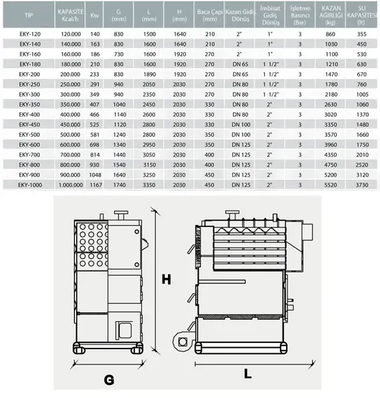
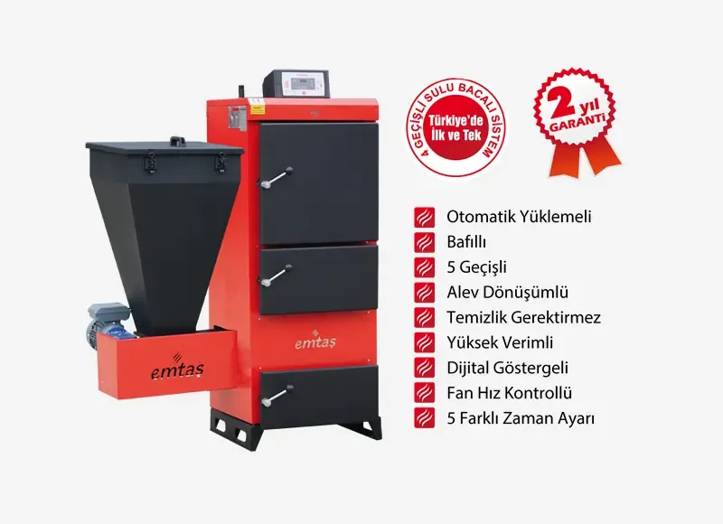
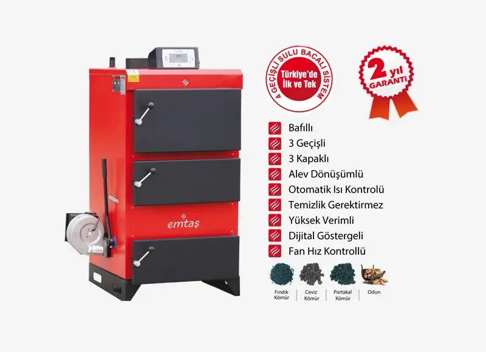
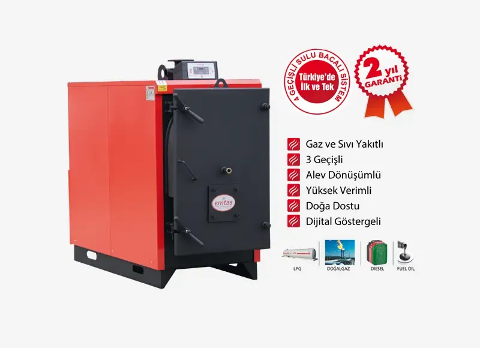
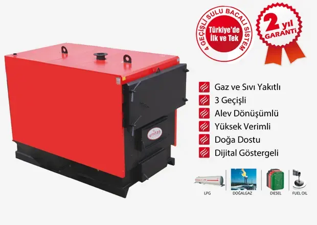

4 Geçişli Merkezi Sistem Katı Yakıtlı Kalorifer Kazanları
| Ürün ailesi | Kazan |
|---|---|
| Özellikler |
|
| Teknik değerler | Tabloyu görün |
Bu ürün için ölçü, adet ve teslim yeri bilgisiyle teklif alabilirsiniz.
Yeni Sistem
4 geçişli alev dönüşüm sistemi ve sulu baca sistemi ile benzerlerinden ayrılan Emtaş katı yakıtlı kat kaloriferleri üstün teknoloji ile TS EN 303-5 standartlarına uygun olarak her türlü katı yakıtı yakabilecek şekilde üretilmiştir.
Enerji Tasarrufu
Otomatik ısı kontrol sistemiyle, istenilen derecede çalışma ve durma sağlanır. Tam dijital kontrol panosu ile yanma sağlayan hava, hassas bir şekilde ayarlanır ve kazan istenilen derecede kontrollü bir şekilde ısıtmaya devam eder. Böylece ortamda istenilen ısı derecesi sabit tutulur. Yakıt bittiğinde ise sistem otomatik olarak kapanır.
Yüksek Verim
Emtaş 4 geçişli katı yakıtlı merkezi sistem kalorifer kazanları, 4 geçişli alev dönüşüm sistemi ile alevin kazan içerisinde 4 kez döndürülmesi gerçekleştirilerek, alevi daha uzun süre kazan içerisinde tutar. Ayrıca sulu baca sistemiyle de atmosfere çıkan gaz sıcaklığı iyice düşürülür. 2 veya 3 geçişli kazanlara göre baca gazı sıcaklığı ortalama 180-200 °C daha düşüktür. Böylece kullanılan yakıttan maksimum verim alınır.
Tam Yanma
Yanma haznesine fan yardımı ile alttan ve sekonder hava kanalı ile üstten hava gönderilir. Kazan içerisinde hava ve gaz sirkülasyonunu dengeleyen bu sistemde yakıtın kontrollü bir şekilde temiz ve tam yanması sağlanmıştır.
Güvence
Emtaş katı yakıtlı kalorifer kazanları, her türlü konut ve işyerinin ısınma ihtiyacını gidermek için üretilmiş olup üstün özellikleri ile güvenli ve ekonomik bir ısınmayı sunmaktadır. Ürünlerimiz TSE ve CE belgeli olup 2 yıl garantilidir.
Teknik değerler


Tabloyu büyütmek için tıklayın. Değerleri belge olarak isterseniz teklif formundan yazın.
Bu ailedeki diğer ürünler
Tümünü görün
Kazan5 Geçişli Bafıllı Otomatik Yüklemeli Katı Yakıtlı Kalorifer Kazanları
Kazan3 Geçişli Bafıllı Otomatik Isı Kontrollü Katı Yakıtlı Kat Kaloriferi
Kazan3 Geçişli Gaz / Sıvı Yakıtlı Merkezi Sistem Kalorifer Kazanları
Kazan3 Geçişli Merkezi Sistem Katı Yakıtlı Kalorifer Kazanları